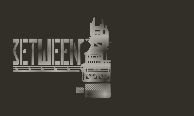
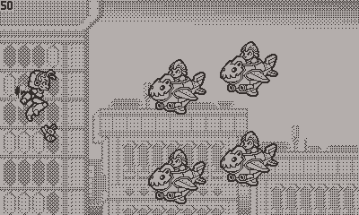
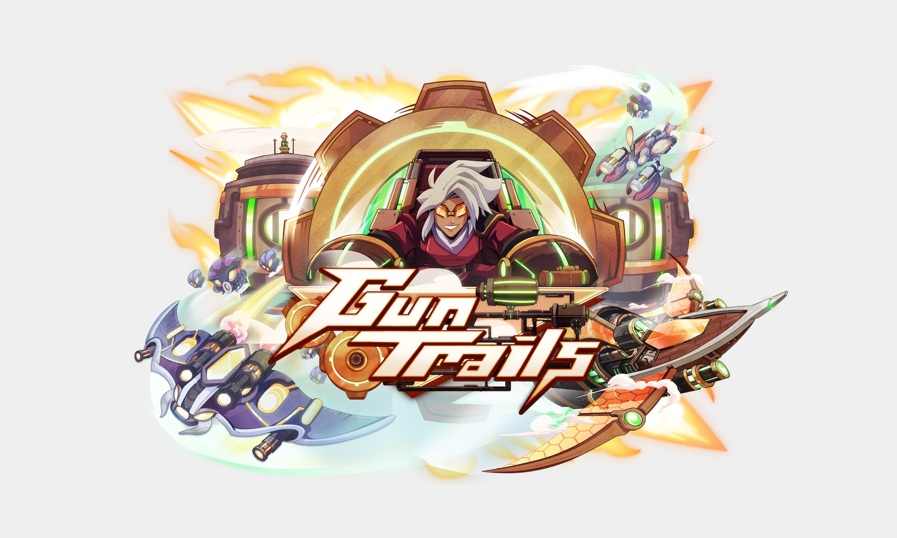
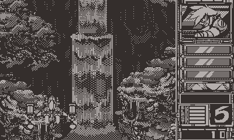

Upcoming
| Tib’s Revenge | A rhythm/puzzle hybrid micro game, which tells the story of my early programming years, coming to Playdate, late 2024. |
| Between Temples  |
A top down boss rush game, coming to Playdate, mid 2025. |
| Waku Waku  |
A horizontal bullethell shmup with a vastly expanded set of modes and difficulties compared to Gun Trails, coming late 2024 / early 2025 |
| Gun Trails HD  |
A re-imagining of Gun Trails for modern consoles and PC, coming late 2025 |
Completed
| Gun Trails  |
A bullethell shmup made for the Playdate. Nominated for 7 community awards, including GOTY. Press: Engadget & Siliconera. For its locked 50hz gameplay, its noted as one of the early pioneers in device performance alongside P-racing. |